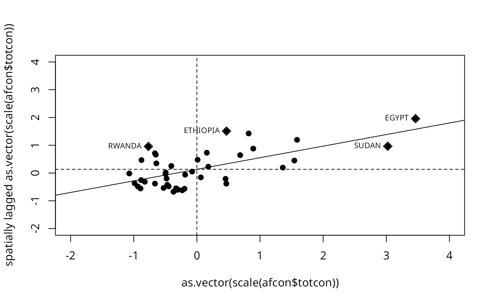

Moran scatterplot
moran.plot.RdA plot of spatial data against its spatially lagged values, augmented by reporting the summary of influence measures for the linear relationship between the data and the lag. If zero policy is TRUE, such observations are also marked if they occur.
moran.plot(x, listw, zero.policy=NULL, spChk=NULL, labels=NULL, xlab=NULL, ylab=NULL, quiet=NULL, ...)
Arguments
| x | a numeric vector the same length as the neighbours list in listw |
|---|---|
| listw | a |
| zero.policy | default NULL, use global option value; if TRUE assign zero to the lagged value of zones without neighbours, if FALSE assign NA |
| spChk | should the data vector names be checked against the spatial objects for identity integrity, TRUE, or FALSE, default NULL to use |
| labels | character labels for points with high influence measures, if set to FALSE, no labels are plotted for points with large influence |
| xlab | label for x axis |
| ylab | label for x axis |
| quiet | default NULL, use !verbose global option value; if TRUE, output of summary of influence object suppressed |
| … | further graphical parameters as in |
Value
The function returns an influence object from influence.measures.
References
Anselin, L. 1996. The Moran scatterplot as an ESDA tool to assess local instability in spatial association. pp. 111--125 in M. M. Fischer, H. J. Scholten and D. Unwin (eds) Spatial analytical perspectives on GIS, London, Taylor and Francis; Anselin, L. 1995. Local indicators of spatial association, Geographical Analysis, 27, 93--115
See also
Examples
data(afcon, package="spData") moran.plot(afcon$totcon, nb2listw(paper.nb), labels=as.character(afcon$name), pch=19)moran.plot(as.vector(scale(afcon$totcon)), nb2listw(paper.nb), labels=as.character(afcon$name), xlim=c(-2, 4), ylim=c(-2,4), pch=19)